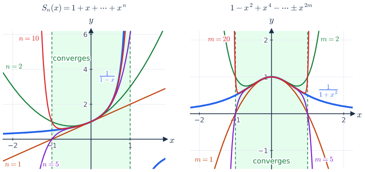
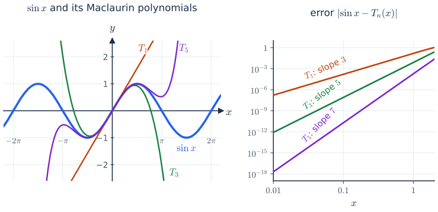
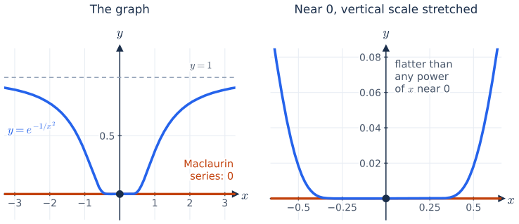
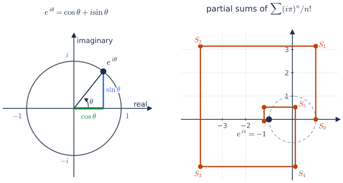

Turn functions into polynomials that never end. You will find where a power series converges, build the series of the standard functions, bound the error of every approximation with Taylor’s theorem, and use series to compute e, π and ln 2, evaluate limits, simplify formulas of physics and see how a computer evaluates a sine. At the end, the series of the exponential, the sine and the cosine combine into Euler’s formula.
⏱ 270 minYou need: Modules 1 to 14, especially the rules of differentiation (Modules 4 to 7), the Mean Value Theorem (Module 8) and series with the ratio test (Module 14)
In this module you will
Find the radius and the interval of convergence of a power series with the ratio test, checking the endpoints separately
Build power series from the geometric series, and differentiate and integrate them term by term
Find Taylor and Maclaurin series from derivatives, and know the standard series and where they converge
Bound the error of a Taylor polynomial with Taylor’s theorem, and prove that ex,sinx and cosx equal their series
Use series to compute constants and limits, and to make the approximations of physics and of mathematics libraries
Derive Euler’s formula eiθ=cosθ+isinθ from the series, and use it to explain oscillating solutions of differential equations
1
Power series
Module 14 summed the geometric series: for every x with ∣x∣<1,
1+x+x2+x3+⋯=1−x1.
Read as a function of x, the left side is a polynomial that never ends. Its partial sums
Sn(x)=1+x+x2+⋯+xn=1−x1−xn+1(x=1)
are ordinary polynomials, and for each x between −1 and 1 they approach 1/(1−x) as n grows. Figure 15.1 (left) shows them: inside the interval (−1,1) the polynomials hug the curve more and more closely; outside it they peel away. The table follows three values of x:
n
Sn(0.5)
Sn(−0.9)
Sn(1.1)
1
1.5
0.1
2.1
2
1.75
0.91
3.31
5
1.96875
0.24661
7.71561
10
1.99902
0.691479
18.5312
20
2.00000
0.583905
64.0025
50
2.00000
0.528757
1281.30
At x=0.5 the partial sums close in on 1/(1−0.5)=2 quickly. At x=−0.9 they swing above and below 1/1.9≈0.526316 and close in slowly. At x=1.1 they grow without bound, although 1/(1−1.1)=−10 is a perfectly good number: there the series and the function part company.

Figure 15.1
Left: the partial sums Sn(x)=1+x+⋯+xn for n=1, 2, 5 and 10, with y=1/(1−x) (blue). In the green band, −1<x<1, they close in on the curve; outside it they do not. Right: the partial sums 1−x2+x4−⋯±x2m for m=1, 2, 5 and 20 close in on y=1/(1+x2) only for −1<x<1, although this function is smooth on the whole line (Section 15.2).
Definition 15.1Power series
A power series centred at a (or about a) is a series of the form
n=0∑∞cn(x−a)n=c0+c1(x−a)+c2(x−a)2+⋯,
where x is a variable and the coefficientsc0,c1,c2,… are constants. For each number x it is a series of numbers, which converges or diverges; where it converges, its sum is a function of x.
The sum reads “the sum from n=0 to infinity of cn times x minus a, to the n”. Its first term is c0(x−a)0, where (x−a)0 means 1 even when x=a. So every power series converges at its centre, to c0, because all its other terms are 0 there. The geometric series is the power series with centre 0 and every cn=1; a polynomial is a power series whose coefficients are 0 from some point on.
Where a power series converges
The geometric series converges on an interval around its centre and diverges outside it. Every power series behaves in this way.
Theorem 15.1Where a power series converges
For a power series ∑cn(x−a)n, exactly one of the following holds:
it converges only at x=a;
it converges absolutely for every real number x;
there is a number R>0 such that the series converges absolutely when ∣x−a∣<R and diverges when ∣x−a∣>R.
Proof
The heart of the proof is a comparison with a geometric series. Suppose the series converges at some x1=a, and let x be closer to a:∣x−a∣<∣x1−a∣. The terms of a convergent series tend to 0 (otherwise the divergence test of Module 14 would make it diverge), so the terms cn(x1−a)n tend to 0, and they are bounded: from some n on they lie between −1 and 1, and the finitely many before are no larger in size than the largest of them. So there is a number M with ∣cn(x1−a)n∣≤M for every n. With q=∣x−a∣/∣x1−a∣, which is less than 1,
∣cn(x−a)n∣=∣cn(x1−a)n∣qn≤Mqn.
The geometric series ∑Mqn converges, so by the comparison test ∑∣cn(x−a)n∣ converges: the series converges absolutely at x. Turned round, if the series diverges at some x2, it diverges at every x farther from a than x2, since convergence there would force convergence at x2.
Now consider the distances ∣x1−a∣ of all the points x1 at which the series converges. If 0 is the only one, case 1 holds. If they include numbers as large as you please, then every x is closer to a than some point of convergence, and case 2 holds. Otherwise these distances are bounded, and they have a least upper boundR: the smallest number that is at least as large as each of them. That such a number exists is the completeness of the real numbers, the property behind the Monotone Convergence Theorem of Module 14. R>0, because the series converges at some x1=a. If ∣x−a∣<R, then ∣x−a∣ is not an upper bound, so there is a point of convergence x1 with ∣x−a∣<∣x1−a∣, and the series converges absolutely at x. If ∣x−a∣>R, the series diverges at x, because ∣x−a∣ is larger than every distance at which it converges.
∎
Definition 15.2Radius and interval of convergence
The number R of Theorem 15.1 is the radius of convergence of the series. In case 1 the radius is R=0, and in case 2 it is R=∞. The set of all x at which the series converges is its interval of convergence.
When 0<R<∞, the interval of convergence runs from a−R to a+R. Theorem 15.1 says nothing about the two endpointsx=a−R and x=a+R: at each of them the series may converge or diverge. So the interval of convergence is one of (a−R,a+R),[a−R,a+R),(a−R,a+R] and [a−R,a+R], and the examples below meet all four.
Finding the radius
The ratio test of Module 14 usually finds R. For the terms cn(x−a)n, with every cn=0 and x=a, the ratio of consecutive terms is
cn(x−a)ncn+1(x−a)n+1=cncn+1∣x−a∣.
If ∣cn+1/cn∣ approaches a limit L, this ratio approaches L∣x−a∣, and the ratio test gives absolute convergence where L∣x−a∣<1 and divergence where L∣x−a∣>1. So R=1/L, with R=∞ if L=0, and R=0 if ∣cn+1/cn∣→∞. At the endpoints the limit of the ratio is exactly 1, where the ratio test says nothing: test them separately, with the other tests of Module 14.
Example 15.1Three intervals of convergence✓ Checked
Find the radius and the interval of convergence of (a) n=1∑∞nxn and (b) n=1∑∞n2xn, and compare them with the geometric series ∑xn.
(a) Here cn=1/n, so
cncn+1=n+1n→1,
and R=1: the series converges absolutely for ∣x∣<1 and diverges for ∣x∣>1. At x=1 it is the harmonic series ∑1/n, which diverges. At x=−1 it is ∑(−1)n/n, which converges by the alternating series test, since the sizes 1/n decrease to 0. The interval of convergence is [−1,1).
(b) Now ∣cn+1/cn∣=n2/(n+1)2→1, so again R=1. At x=±1 the series of absolute values is ∑1/n2, a convergent p-series, so the series converges absolutely at both endpoints. The interval is [−1,1].
The geometric series also has radius 1, and at x=±1 its terms, 1 or (−1)n, do not tend to 0, so its interval is (−1,1). Three series with the same radius have three different intervals: the endpoints must always be checked.
Example 15.2Radius ∞ and radius 0✓ Checked
Find the radius of convergence of n=0∑∞n!xn and of n=0∑∞n!xn, where 0!=1.
For the first, cn=1/n!, and since (n+1)!=(n+1)n!,
cncn+1=(n+1)!n!=n+11→0.
The ratio of the terms tends to 0⋅∣x∣=0<1 for every x: the series converges absolutely for every x, and R=∞. For the second, ∣cn+1/cn∣=(n+1)!/n!=n+1→∞. For every x=0 the ratio of the terms, (n+1)∣x∣, grows without bound, so the series diverges, and R=0: it converges only at its centre. The first series returns in Section 15.4 as the series of ex.
Example 15.3A series centred at 3✓ Checked
Find the interval of convergence of n=1∑∞n2n(−1)n(x−3)n.
Here cn=n2n(−1)n, and
cncn+1=(n+1)2n+1n2n=2(n+1)n→21.
So R=2: the series converges absolutely when ∣x−3∣<2, that is, 1<x<5, and diverges when ∣x−3∣>2. At x=5,(x−3)n=2n, and the series is ∑(−1)n/n, which converges by the alternating series test. At x=1,(x−3)n=(−2)n=(−1)n2n, and the terms are n2n(−1)n(−1)n2n=n1: the harmonic series, which diverges. The interval of convergence is (1,5], centred at 3 with radius 2.
Watch out
Two slips with the ratio test. It works with absolute values: the condition in Example 15.3 is ∣x−3∣<2, an interval centred at 3, not x−3<2, which would let in every x<5. And at the endpoints, where the ratio tends to exactly 1, the test is silent: declaring them in or out without testing them is the most common error with intervals of convergence.
2
Functions as power series
Section 15.1 started from a series and found its sum. Now turn the question round: given a function, find a power series whose sum it is. The geometric series is the source of many. For every number u with ∣u∣<1,
1−u1=n=0∑∞un=1+u+u2+⋯,
and u may be replaced by any expression in x, provided the condition ∣u∣<1 is translated too. With u=−x, for ∣x∣<1,
1+x1=1−x+x2−x3+⋯=n=0∑∞(−1)nxn.
With u=−x2, which satisfies ∣u∣<1 exactly when ∣x∣<1,
1+x21=1−x2+x4−x6+⋯=n=0∑∞(−1)nx2n.
At x=±1 the terms of both series have size 1 and do not tend to 0, so both intervals of convergence are (−1,1). The second is a surprise. The function 1/(1+x2) is defined and smooth on the whole real line, with nothing special at ±1, yet its series stops converging there (Figure 15.1, right). The reason lies off the real line, and Section 15.7 reveals it.
Example 15.4Series from the geometric series✓ Checked
Find a power series for each function, centred where stated, with its interval of convergence:
(a) 2−x1, centred at 0;
(b) 1−x2x, centred at 0;
(c) x1, centred at 1.
(a) Make the 1 of 1/(1−u) appear by taking out the factor 2:
This needs ∣x/2∣<1, that is, ∣x∣<2. At x=±2 the terms have size 21 and do not tend to 0, so the interval is (−2,2).
(b) With u=x2,1−x21=∑x2n for ∣x∣<1. Multiplying every term by x multiplies the sum by x, so for ∣x∣<1
1−x2x=n=0∑∞x2n+1=x+x3+x5+⋯.
At x=±1 every term is ±1, so the interval is (−1,1).
(c) A series centred at 1 is a series in powers of x−1. Write x=1+(x−1) and use u=−(x−1):
x1=1+(x−1)1=n=0∑∞(−1)n(x−1)n,
for ∣x−1∣<1, that is, 0<x<2. At x=0 and x=2 the terms have size 1, so the interval is (0,2): centred at 1, with radius 1.
One function can have different series about different centres. About 0, 2−x1=∑xn/2n+1; about 1, 2−x1=1−(x−1)1=∑(x−1)n, for ∣x−1∣<1. Each series describes the function on its own interval.
Watch out
Two slips with substitution. Losing the factor in front: 2−x1 is 21∑(x/2)n, and without the 21 the series is that of 2−x2. And forgetting to translate the condition: ∑(x/2)n converges for ∣x∣<2, not ∣x∣<1. A quick test at one point catches both: at x=1 the series of Example 15.4(a) is 21+41+81+⋯=1, and indeed 2−11=1.
3
Differentiating and integrating series
Inside its interval of convergence a power series can be treated like a polynomial: differentiated and integrated term by term.
Theorem 15.2Term-by-term differentiation and integration
Let ∑cn(x−a)n have radius of convergence R>0 (possibly R=∞), and for ∣x−a∣<R let
f(x)=n=0∑∞cn(x−a)n.
Then, for every x with ∣x−a∣<R:
f is differentiable at x, and f′(x)=n=1∑∞ncn(x−a)n−1;
∫axf(t)dt=n=0∑∞n+1cn(x−a)n+1.
Both new series have radius of convergence R.
Applying part 1 again and again shows that a power series has derivatives of every order inside its interval of convergence, each found term by term. The radius never changes, but the endpoints can. The series ∑xn/n2 of Example 15.1 converges at both x=1 and x=−1; its derivative ∑xn−1/n converges at −1 only; and the next derivative, ∑(n−1)xn−2/n, at neither, because its terms do not tend to 0 there.
The proof is in the Going deeper box below; its key step is the Mean Value Theorem of Module 8. A first reading may take the theorem on trust.
Watch out
Term-by-term differentiation is a theorem about power series inside their interval of convergence, not about every series of functions. The series n=1∑∞n2sin(n2x) converges for every x, by comparison with ∑1/n2; but differentiating it term by term gives ∑cos(n2x), which at x=0 is 1+1+1+⋯ and diverges.
Going deeperWhy term-by-term differentiation works
Take a=0; for another centre, write x−a for x throughout.
The derived series has the same radius. Let ∣x∣<R, and choose r with ∣x∣<r<R. The series converges at r, so its terms are bounded, as in the proof of Theorem 15.1: ∣cn∣rn≤M for every n. Then, with q=∣x∣/r<1,
ncnxn−1=rn∣cn∣rnqn−1≤rMnqn−1,
and ∑nqn−1 converges by the ratio test when q>0:(n+1)qn/(nqn−1)→q<1. When q=0, only its first term is nonzero, so it converges too. Thus the derived series converges absolutely for ∣x∣<R. It diverges for ∣x∣>R: otherwise, by Theorem 15.1, it would converge absolutely at some y with R<∣y∣<∣x∣, and since ∣cnyn∣≤∣y∣ncnyn−1 for n≥1, so would the original series, which is impossible beyond its radius. The same argument, applied to the derived series, shows that the twice-derived series ∑n(n−1)cnxn−2 has radius R too.
The derivative. Let g(x)=∑ncnxn−1, fix x with ∣x∣<r<R, and let h=0 be so small that ∣x+h∣<r. For n≥2, the Mean Value Theorem gives (x+h)n−xn=nξn−1h for some ξ between x and x+h, and, applied again, nξn−1−nxn−1=n(n−1)ηn−2(ξ−x) for some η between x and ξ. Since ∣ξ∣ and ∣η∣ are less than r and ∣ξ−x∣≤∣h∣,
h(x+h)n−xn−nxn−1≤n(n−1)rn−2∣h∣,
and for n=0 and n=1 the left side is 0. The three series for f(x+h),f(x) and g(x) converge, so they may be combined term by term:
hf(x+h)−f(x)−g(x)≤∣h∣n=2∑∞n(n−1)∣cn∣rn−2.
The last series converges, because the twice-derived series converges absolutely at r<R. So the left side tends to 0 as h→0:f′(x)=g(x).
The integral. The series F(x)=∑cnxn+1/(n+1) has the original series as its derived series, so by the first step it has radius R, and by the second, F′=f on (−R,R). Since F(0)=0, the Fundamental Theorem of Calculus (Module 10) gives ∫0xf(t)dt=F(x)−F(0)=F(x).
The logarithm and the arctangent
Integrating geometric series gives series for two functions that have nothing geometric about them.
Example 15.5Series for ln(1+x) and arctanx✓ Checked
Find power series about 0 for ln(1+x) and arctanx, and use four terms of the first to estimate ln1.1.
For ∣t∣<1,1+t1=∑(−1)ntn. Let ∣x∣<1. The function ln(1+t) is an antiderivative of 1+t1, and ln1=0, so by the Fundamental Theorem of Calculus and Theorem 15.2,
A calculator gives ln1.1≈0.0953102: both S4 and ln1.1 round to 0.09531. The terms alternate in sign and decrease in size, so by the alternating series bound of Module 14 the error ln1.1−S4 is positive and less than the first term left out, 0.15/5=0.000002. This bound applies to the exact partial sum, before rounding it. At x=21 the same series gives ln23=21−81+241−⋯, the sum of Exercise 14.9.
Differentiating a series is as useful as integrating it, for instance to find sums.
Example 15.6A sum found by differentiating✓ Checked
Find the sum of n=1∑∞nxn for ∣x∣<1, and the value of n=1∑∞2nn.
Differentiate the geometric series term by term (Theorem 15.2): for ∣x∣<1,
(1−x)21=dxd(1−x1)=n=1∑∞nxn−1=1+2x+3x2+⋯.
Multiplying by x gives n=1∑∞nxn=(1−x)2x. At x=21,
n=1∑∞2nn=(1/2)21/2=2.
The sum has a meaning in probability. Toss a fair coin until it lands heads: the first head comes on toss n with probability 1/2n, so the expected number of tosses, the sum of each possible number n times its probability, is ∑n/2n=2.
The ends of the interval
At x=1 the series for ln(1+x) becomes the alternating harmonic series 1−21+31−⋯, which converges by the alternating series test; Module 14 stated that its sum is ln2. Example 15.5 does not prove it, because Theorem 15.2 integrates term by term only for ∣x∣<1. Integrating a finite sum instead, which is always allowed, proves it, with an error bound.
Theorem 15.3Two sums at the ends of the interval
For every whole number n≥1,
ln2−(1−21+31−⋯+n(−1)n−1)≤n+11
and
4π−(1−31+51−⋯+2n−1(−1)n−1)≤2n+11.
Consequently ln2=1−21+31−41+⋯ and 4π=1−31+51−71+⋯.
Proof
The finite geometric sum of Module 14 gives, for t=−1,1−t+t2−⋯+(−t)n−1=1+t1−(−t)n, that is,
1+t1=k=0∑n−1(−1)ktk+(−1)n1+ttn.
Integrate from 0 to 1. The integral of a finite sum is the sum of the integrals, ∫01tkdt=k+11, and ∫011+tdt=ln2, so
ln2=k=0∑n−1k+1(−1)k+(−1)n∫011+ttndt.
The sum is 1−21+⋯+n(−1)n−1. For 0≤t≤1,0≤1+ttn≤tn, so the last integral lies between 0 and ∫01tndt=n+11 (the comparison theorem of Module 9). This is the first inequality, and since n+11→0, the partial sums approach ln2. For 4π, put t2 for t in the identity:
1+t21=k=0∑n−1(−1)kt2k+(−1)n1+t2t2n.
Integrating from 0 to 1 gives arctan1=4π on the left, and on the right the partial sum plus ± an integral that lies between 0 and ∫01t2ndt=2n+11.
∎
The bound also shows how slowly the alternating harmonic series converges. After 10, 100 and 1000 terms its partial sums are about 0.6456, 0.6882 and 0.6926, while ln2≈0.693147: the error magnitudes are close to 1/(2n), so each extra correct decimal costs ten times as many terms. Section 15.6 finds much faster series for ln2 and π.
The proof used special features of ln(1+x) and arctanx. A general theorem covers every power series at an endpoint where it converges.
Theorem 15.4Abel’s theorem
Suppose that ∑cn(x−a)n has radius of convergence R, with 0<R<∞, and that it converges at the endpoint x=a+R. Then its sum there is the limit of its sums inside the interval:
n=0∑∞cnRn=x→(a+R)−limn=0∑∞cn(x−a)n.
The same holds at x=a−R, with the limit from the right.
This course does not prove Abel’s theorem; books on real analysis do. Its use is this. Suppose f(x) equals the sum of its series inside the interval, f is continuous at an endpoint, and the series converges there. Then the series equals f at that endpoint too, because both are the limit of f(x) as x approaches the endpoint from inside. So, with no new work, ln(1+x)=x−2x2+⋯ on (−1,1], and arctanx=x−3x3+⋯ on [−1,1]; at x=−1 the series of arctan is −(1−31+51−⋯), which converges by the alternating series test.
Watch out
The interval of convergence of a series for f is not the domain of f.ln(1+x) is defined for every x>−1, but its series converges only on (−1,1]: at x=2 its terms ±2n/n grow without bound, although ln3 exists. Outside its interval of convergence a series tells you nothing about the function.
4
Taylor series
So far every series has come from the geometric series. Most functions have nothing to do with it: ex, for instance. Does ex have a power series, and how would you find it? If a function has a power series, its derivatives fix the coefficients. Take f(x)=∑cn(x−a)n, with radius R>0, and differentiate term by term, again and again (Theorem 15.2):
At x=a every term that contains x−a is 0, so f(a)=c0,f′(a)=c1,f′′(a)=2c2 and f′′′(a)=3!c3.
Theorem 15.5The coefficients of a power series
If f(x)=∑cn(x−a)n for ∣x−a∣<R, with R>0, then for every n≥0
cn=n!f(n)(a).
In particular, f has only one power series centred at a.
Proof
By Theorem 15.2, applied n times, for ∣x−a∣<R
f(n)(x)=k=n∑∞k(k−1)⋯(k−n+1)×ck(x−a)k−n.
At x=a every term with k>n is 0, and the term with k=n is n(n−1)⋯1⋅cn=n!cn. Since the coefficients are fixed by f, two power series for f about a have the same coefficients: they are the same series.
∎
Here f(0) means f itself and 0!=1, so the formula gives c0=f(a) too. Uniqueness is useful in practice: however you find a power series for f about a (by substitution, by integration, from derivatives), you get the same series.
Definition 15.3Taylor series and Taylor polynomials
Let f have derivatives of every order at a. The Taylor series of f about a (or centred at a) is
is the Taylor polynomial of degree n of f about a. When a=0 they are called the Maclaurin series and the Maclaurin polynomials of f.
Tn(x) reads “T n of x”. T1(x)=f(a)+f′(a)(x−a) is the linearisation of Section 7.2, and Tn is said to have degree n even when its last coefficient happens to be 0. Theorem 15.5 says that if f has a power series about a, it is the Taylor series. It does not say that the Taylor series converges, or that its sum is f: Section 15.5 settles both questions.
The standard series
Example 15.7The series of ex✓ Checked
Find the Maclaurin series of ex and its radius of convergence.
Every derivative of ex is ex (Module 6), so f(n)(0)=e0=1 for every n, and the Maclaurin series is
n=0∑∞n!xn=1+x+2!x2+3!x3+⋯.
By Example 15.2 it converges for every x:R=∞. Its Taylor polynomials T1(x)=1+x and T2(x)=1+x+21x2 are the approximations of Example 7.13 (Section 7.5), where L’Hôpital’s rule showed that ex−1−x≈21x2 near 0. Section 15.5 proves that the series equals ex for every x. At x=1 it gives e=1+1+2!1+3!1+⋯, and at x=−1 it gives 1/e=1−1+2!1−3!1+⋯≈0.367879, the sum estimated in Example 14.14.
Example 15.8The series of sinx and cosx✓ Checked
Find the Maclaurin series of sinx and of cosx, and their radii of convergence.
The derivatives of sinx are cosx,−sinx,−cosx,sinx, and then the cycle of four repeats. At 0 the values of sinx and its derivatives are 0,1,0,−1,0,1,0,−1,…. So only odd powers appear, with alternating signs:
sinx=x−3!x3+5!x5−⋯=n=0∑∞(−1)n(2n+1)!x2n+1.
For cosx the values at 0 are 1,0,−1,0,1,…, and only even powers appear:
cosx=1−2!x2+4!x4−⋯=n=0∑∞(−1)n(2n)!x2n.
(The equals signs anticipate Section 15.5, which proves them; so far these are the Maclaurin series.) For the sine series, the ratio of two consecutive nonzero terms is
so it converges for every x, and the cosine series likewise: R=∞ for both. Each series is the term-by-term derivative of the other, up to a sign, as (sinx)′=cosx and (cosx)′=−sinx require. And the odd function sin has only odd powers, the even function cos only even ones.
Example 15.9A Taylor polynomial about 4✓ Checked
Find the Taylor polynomial T3 of x about 4, and use T1,T2 and T3 to estimate 4.1.
The derivatives of f(x)=x1/2 come from the power rule:
A calculator gives 4.1≈2.02484567: the errors are about −1.5×10−4,1.9×10−6 and −3.0×10−8. Each new term gains about two correct digits here. T1 is the linearisation of Example 7.5.
The binomial series. For any real number k and x>−1, the derivatives of f(x)=(1+x)k follow from the power rule of Module 6:
f′(x)f′′(x)=k(1+x)k−1,=k(k−1)(1+x)k−2,
and in general f(n)(x)=k(k−1)⋯(k−n+1)(1+x)k−n. At 0, f(n)(0)=k(k−1)⋯(k−n+1), so the Maclaurin coefficients are the binomial coefficients
(nk)(0k)=n!k(k−1)⋯(k−n+1),=1,
read “k choose n”. The Maclaurin series of (1+x)k is the binomial series
When k is a whole number, k≥0, every coefficient with n>k contains the factor k−k=0, so the series stops: it is the binomial theorem of algebra, as in (1+x)3=1+3x+3x2+x3. For every other k no coefficient is 0, and the ratio test gives
(nk)xn(n+1k)xn+1=n+1∣k−n∣∣x∣→∣x∣,
so the radius of convergence is 1.
Theorem 15.6The binomial series
For every real number k and every x with ∣x∣<1,
(1+x)k=n=0∑∞(nk)xn.
Proof
Let g(x) be the sum of the series for ∣x∣<1. By Theorem 15.2, renaming n−1 as n,
g′(x)=n=1∑∞n(nk)xn−1=n=0∑∞(n+1)(n+1k)xn.
From the definition, (n+1k)=(nk)n+1k−n, so (n+1)(n+1k)=(k−n)(nk). Also xg′(x)=∑n(nk)xn (the term with n=0 is 0). Adding,
for ∣x∣<1. A function whose derivative is 0 on an interval is constant (Module 8), so h(x)=h(0)=g(0)=1, that is, g(x)=(1+x)k.
∎
Whether the binomial series converges at x=±1 depends on k: for k=21 it converges at both ends, and for k=−1, where it is the geometric series of 1/(1+x), at neither.
Example 15.10Two binomial series✓ Checked
Find the first four terms of the binomial series of (a) 1+x and (b) 1−x1.
(b) Now k=−21, with −x in place of x. The coefficients are (1−1/2)=−21,(2−1/2)=2(−1/2)(−3/2)=83 and (3−1/2)=6(−1/2)(−3/2)(−5/2)=−165, and multiplying by (−x)n makes every sign positive:
1−x1=1+2x+83x2+165x3+⋯,
for ∣x∣<1.
The first two terms of (a) are the linearisation 1+x≈1+21x; the third term shows that it is slightly too large, by about 81x2. Series (b) returns in Section 15.6, in Einstein’s formula for kinetic energy.
The series of this section and the last make a short list worth knowing by heart:
Function
Maclaurin series
Equals the function for
1−x1
n=0∑∞xn=1+x+x2+⋯
−1<x<1
ln(1+x)
n=1∑∞(−1)n−1nxn=x−2x2+3x3−⋯
−1<x≤1
arctanx
n=0∑∞(−1)n2n+1x2n+1=x−3x3+5x5−⋯
−1≤x≤1
ex
n=0∑∞n!xn=1+x+2!x2+⋯
every x
sinx
n=0∑∞(−1)n(2n+1)!x2n+1=x−3!x3+⋯
every x
cosx
n=0∑∞(−1)n(2n)!x2n=1−2!x2+⋯
every x
(1+x)k
n=0∑∞(nk)xn=1+kx+⋯
−1<x<1, and for some k also at ±1
When k is a nonnegative integer, the binomial series stops and equals (1+x)k for every real x, not only inside (−1,1). For every other k, the radius is 1 and the endpoints need separate tests. The last column for ex,sinx and cosx is proved in Section 15.5 (Theorem 15.9).
Key idea
A handful of series generate almost all the others: the geometric series, the series of ex,sinx and cosx, and the binomial series. New series come from these by substituting, multiplying by a power of x, differentiating and integrating, which is usually far quicker than computing derivatives, and by uniqueness (Theorem 15.5) the result is the Taylor series.
Watch out
A Taylor series needs every derivative at its centre. x has no Maclaurin series, because x has no derivative at 0, and lnx has none either, because it is not defined at 0. Use another centre (x about 4, lnx about 1), or shift the function (1+x,ln(1+x)).
Series give numerical values for integrals whose antiderivatives are not elementary, such as those of e−x2 from Module 11.
Example 15.11An integral with no elementary antiderivative✓ Checked
Find ∫01e−x2dx to three decimal places.
Substitute u=−x2 in the series of eu, which converges for every u:
e−x2=n=0∑∞n!(−x2)n=1−x2+2!x4−3!x6+⋯.
Integrate term by term from 0 to 1 (Theorem 15.2, with R=∞):
The terms alternate in sign and decrease in size to 0, so the alternating series bound applies: the sum of the first six terms, 0.746729 to six places, differs from the integral by less than the seventh term, 1/9360<0.00011. So the integral lies between 0.74672 and 0.74684, and to three decimal places it is 0.747. Up to scaling, e−x2 is the bell curve of the normal distribution (Module 12), so integrals like this one give the probabilities of that distribution, which have no formula in elementary functions.
Compute itTaylor series with SymPy
SymPy’s series computes Taylor series. Its arguments are the expression, the variable, the centre and the order of the first term left out:
Python
import sympy as sp
x = sp.symbols('x')
print(sp.series(sp.exp(x), x, 0, 6))
print(sp.series(sp.sin(x), x, 0, 8).removeO())
print(sp.series(sp.sqrt(x), x, 4, 3))
O(x**6), read “big O of x to the 6”, stands for the terms of degree 6 and higher that were left out, as in the big-O notation of Module 4. .removeO() drops it and leaves a Taylor polynomial, here T7 of sinx, which SymPy prints with the highest power first. The third line is T2 of x about 4, from Example 15.9, with the polynomial rearranged: 2+4x−4 is 1+4x. SymPy also handles a symbolic exponent, and functions whose coefficients you would not want to compute by hand:
The first line is the binomial series. The coefficients of tanx follow no simple pattern, and its series converges only for ∣x∣<π/2. Mind the order of the arguments: the third is the centre, not the number of terms.
Python
print(sp.series(x**3, x, 4))
Output
48*x + (x - 4)**3 + 12*(x - 4)**2 - 128
With no fourth argument, SymPy expands about the centre 4 (with its default order 6). A polynomial is its own Taylor series, so the answer is x3 rewritten in powers of x−4,64+48(x−4)+12(x−4)2+(x−4)3, with 64+48(x−4) merged into 48x−128; there is no O term, because nothing was left out.
Taylor polynomials
In practice nobody sums a whole series: you stop at some Tn. Figure 15.2 shows how the Maclaurin polynomials of sinx,
T1(x)T3(x)T5(x)=x,=x−6x3,=x−6x3+120x5,
approximate it. (Since every even coefficient is 0, T2=T1 and T4=T3.) Each hugs the curve around 0, and the higher the degree, the wider the stretch on which it does.

Figure 15.2
Left: sinx (blue) and its Maclaurin polynomials T1,T3 and T5. Each hugs the curve near 0, over a wider stretch as the degree grows, and then turns away. Right: the errors ∣sinx−Tn(x)∣ for 0.01≤x≤2, on logarithmic scales. They lie close to straight lines of slopes 3, 5 and 7: halving x divides the error of Tn by about 2n+2.
x
sinx
T1(x)
T3(x)
T5(x)
0.1
0.0998334
0.1
0.0998333
0.0998334
0.5
0.479426
0.5
0.479167
0.479427
1
0.841471
1
0.833333
0.841667
2
0.909297
2
0.666667
0.933333
3
0.141120
3
−1.5
0.525
At x=0.1,T5 agrees with sinx in all six digits shown, and T3 in five. Farther from 0 more terms are needed: at x=2,T5 is off by 0.024, and at x=3 by 0.38, while T1 is off by almost 3.
Why do Taylor polynomials fit so well? Because Tn has the same value and the same first n derivatives at a as f: differentiating Tnk times and putting x=a leaves k! times its kth coefficient, which is f(k)(a), for every k≤n.T1 matches the value and the slope, so it is the tangent line; T2 matches the second derivative too, which decides how the graph bends (Module 8); and so on. No other polynomial of degree at most n does this, because the derivatives of a polynomial at a fix its coefficients (Theorem 15.5 holds for polynomials, whose series stop).
Try it
Choose a function, then raise the degree n from 0 and watch Tn (orange) approximate f (blue) around the centre a. The readout compares Tn(x0) with f(x0) at the probe point x0. For ex,sinx and cosx the error at any x0 tends to 0 as n grows; move the centre too. For the other four functions, the green band marks the radius of convergence: outside it, increasing the degree does not make the error tend to 0. Try ln(1+x) about 0 with x0=1.5: the error magnitude first decreases, then grows. Move the centre of arctanx away from 0 and note the radius 1+a2; Section 15.7 explains it.
5
Taylor’s theorem
A Taylor polynomial is useful only when you know how far it is from the function. The difference
Rn(x)=f(x)−Tn(x)
is the remainder of degree n (Rn(x) reads “R n of x”). Since Tn(x) is a partial sum of the Taylor series, f(x) equals the sum of its Taylor series exactly when Rn(x)→0 as n→∞. Taylor’s theorem gives a formula for the remainder.
Theorem 15.7Taylor’s theorem
Let n≥0 be a whole number, and let f have derivatives up to order n+1 on an open interval I that contains a. Then for every x in I,
for some number c between a and x (with c=a if x=a).
This form of Rn is the Lagrange form of the remainder. For n=0 the theorem says f(x)=f(a)+f′(c)(x−a), the Mean Value Theorem: Taylor’s theorem is the Mean Value Theorem with more terms. The remainder looks like the next term of the Taylor series, (n+1)!f(n+1)(a)(x−a)n+1, except that the derivative is taken at an unknown point c instead of at a.
Proof
If x=a, both sides equal f(a). So let x=a, and let K be the number for which
f(x)=Tn(x)+(n+1)!K(x−a)n+1;
it exists because (x−a)n+1=0. The task is to show that K=f(n+1)(c) for some c between a and x. Keep x fixed, and define, for t in the closed interval between a and x,
At t=x every term of the sum with k≥1 is 0, and the term with k=0 is f(x), so g(x)=0; and g(a)=0 by the choice of K. Now differentiate with respect to t. The term with k=0,f(t), has derivative f′(t), and by the product rule the term with k≥1 has derivative
k!f(k+1)(t)(x−t)k−(k−1)!f(k)(t)(x−t)k−1.
Added up, the second part of each of these cancels the first part of the one before: the sum telescopes, and only n!f(n+1)(t)(x−t)n survives. So
The function g is differentiable, and g(a)=g(x)=0, so by Rolle’s theorem (Module 8) g′(c)=0 for some c strictly between a and x. There (x−c)n=0, so K=f(n+1)(c).
∎
For example, for ex with a=0,n=3 and x=1,R3(1)=e−38≈0.0516, and the theorem promises a c between 0 and 1 with ec/4!=R3(1): it is c=ln(24(e−38))≈0.214. In practice c is unknown, and a bound is all you need.
Key idea
Taylor’s inequality. If f(n+1)(t)≤M for every t between a and x, then
∣f(x)−Tn(x)∣≤(n+1)!M∣x−a∣n+1.
Taylor’s theorem also says how good Tn is near a. Suppose f(n+1) is continuous on I. On a closed interval around a inside I it is bounded, say by M (the Extreme Value Theorem of Module 3), and for x=a in that interval
(x−a)nf(x)−Tn(x)≤(n+1)!M∣x−a∣,
which tends to 0 as x→a. So the error of Tn is small even compared with (x−a)n; for n=1 this is Theorem 7.1. In this sense Tn is the best polynomial approximation of degree n near a. No other polynomial p of degree at most n does as well: if (f(x)−p(x))/(x−a)n also tended to 0, then so would q(x)/(x−a)n, where q=Tn−p. Write q(x)=d0+d1(x−a)+⋯+dn(x−a)n. Then q(x),q(x)/(x−a), …, q(x)/(x−a)n−1 tend to 0 as well, being q(x)/(x−a)n times a power of x−a. The first limit is d0, so d0=0; then the second is d1, so d1=0; and so on up to dn=0. So p=Tn.
Error bounds
Example 15.12Two error bounds✓ Checked
(a) Bound the error of T5(0.5) as an estimate of sin0.5. (b) Bound the error of T2(4.1) as an estimate of 4.1 (Example 15.9), and decide whether T2(4.1) is too large or too small.
(a) Every derivative of sin is ±sin or ±cos, so M=1 will do for every n. With n=5, Taylor’s inequality gives ∣R5(0.5)∣≤0.56/6!≈2.2×10−5. You can do better. The coefficient of x6 in the series of sinx is 0, so T5=T6, and with n=6
The actual error is about 1.92×10−6. The Lagrange form also gives the sign: R2(4.1)=3!f′′′(c)(0.1)3 with f′′′(c)>0, so the remainder is positive, and T2(4.1)=2.02484375 is slightly too small.
Example 15.13A polynomial for ex on [−1,1]✓ Checked
Find a degree n for which the Maclaurin polynomial Tn of ex satisfies ∣ex−Tn(x)∣<10−6 for every x in [−1,1].
Every derivative of ex is ex, and for t between 0 and x, with ∣x∣≤1,et≤e1<3. So M=3 will do, and
∣ex−Tn(x)∣≤(n+1)!3∣x∣n+1≤(n+1)!3.
This is less than 10−6 when (n+1)!>3000000. Since 9!=362880 and 10!=3628800,n+1=10 is enough: T9 is within 10−6 of ex on the whole interval. The bound is not wasteful here. At x=1 the error of T8 is about 3.1×10−6, too large, while that of T9 is about 3.0×10−7.
Watch out
Taylor’s inequality needs M to bound f(n+1) on the whole interval between a and x, not only at a. For ex on [0,1], the bound M=f(n+1)(0)=1 is too small: at x=1 it would promise ∣e−T9(1)∣≤1/10!≈2.8×10−7, but the error is 3.0×10−7. Take the largest value of f(n+1) on the interval, or any number above it.
Errors of earlier approximations
Modules 4 and 7 stated how large the errors of three approximations are, and left the proofs to this module. Here, as there, the error is the exact value minus the approximation.
Theorem 15.8Errors of the linearisation and of difference quotients
If f′′ exists on an open interval containing a and x, and L is the linearisation of f at a, then f(x)−L(x)=2f′′(c)(x−a)2 for some c between a and x (take c=a when x=a). If also ∣f′′∣≤M between a and x, then ∣f(x)−L(x)∣≤2M(x−a)2.
Let h>0. If f′′ exists on an open interval containing a and a+h, the error of the forward difference is
f′(a)−hf(a+h)−f(a)=−2hf′′(c)
for some c between a and a+h.
Let h>0. If f′′′ exists and is continuous on an open interval containing a−h and a+h, the error of the central difference is
f′(a)−2hf(a+h)−f(a−h)=−6h2f′′′(c)
for some c between a−h and a+h.
Proof
Part 1 is Taylor’s theorem with n=1, since T1=L. For part 2, apply part 1 with x=a+h:f(a+h)=f(a)+f′(a)h+21f′′(c)h2. Subtract f(a) and divide by h to get the forward difference, then subtract this quotient from f′(a). For part 3, Taylor’s theorem with n=2 at x=a+h and at x=a−h gives
f(a±h)=f(a)±f′(a)h+2f′′(a)h2±6f′′′(c±)h3,
with c+ between a and a+h and c− between a−h and a. Subtract: the terms f(a) and 21f′′(a)h2 cancel, and
f(a+h)−f(a−h)=2f′(a)h+6f′′′(c+)+f′′′(c−)h3.
Divide by 2h, then subtract the quotient from f′(a): the error is −6h2 times 21(f′′′(c+)+f′′′(c−)), the average of two values of f′′′. The average lies between the two values, so, f′′′ being continuous, the Intermediate Value Theorem (Module 3) gives a c between c− and c+ at which f′′′(c) equals it.
∎
As h→0 in part 2, c is squeezed towards a, so if f′′ is continuous at a the error is about −2hf′′(a); and if ∣f′′∣≤M near a, its absolute value is at most 2Mh, so it is O(h). In the same way the error in part 3 is about −6h2f′′′(a), and it is O(h2). These are the claims of Section 4.7. Part 1 gives both claims of Section 7.2: the bound 2M(x−a)2, and, when f′′ is continuous at a,f(x)−L(x)≈2f′′(a)(x−a)2, because (x−a)2f(x)−L(x)=2f′′(c)→2f′′(a) as x→a.
Newton’s method of Module 7 is a third beneficiary. Let f(r)=0, suppose f′′ exists on an open interval containing xn and r, and assume f′(xn)=0. Keep Module 7’s convention en=xn−r for the signed error of an iterate: it is the reverse of the approximation-error convention above. If xn=r, Taylor’s theorem of degree 1 about xn, evaluated at r, gives
0=f(r)=f(xn)+f′(xn)(r−xn)+2f′′(cn)(r−xn)2
for some cn between xn and r. Divide by f′(xn), and use xn+1=xn−f(xn)/f′(xn), so that f(xn)/f′(xn)=xn−xn+1:
en+1=2f′(xn)f′′(cn)en2.
If xn=r, Newton’s next step stays at r, so both errors are 0 and the relation still holds with cn=r. Module 7 found this relation approximately, with xn in place of cn; here it is exact. Exercise 15.12 completes the proof of Theorem 7.3 from it.
Fix x; it is enough to show that Rn(x)→0 as n→∞. For ex, every derivative is et, and for t between 0 and x,et≤e∣x∣. So Taylor’s inequality gives
∣Rn(x)∣≤e∣x∣(n+1)!∣x∣n+1.
For sinx and cosx every derivative lies between −1 and 1, so ∣Rn(x)∣≤∣x∣n+1/(n+1)!. Finally, ∣x∣m/m!→0 as m→∞, for every x: these are the terms of the series ∑∣x∣m/m!, which converges (Example 15.2), and the terms of a convergent series tend to 0. So Rn(x)→0 in all three cases.
∎
The same argument works about any centre a, so ex,sinx and cosx equal their Taylor series about every point, for every x. A function that equals the sum of its Taylor series on an interval around each point of an open interval is called analytic there; ex,sinx and cosx are analytic on the whole line.
Going deeperA Taylor series that converges to the wrong function
Is the condition Rn(x)→0 really needed? If a Taylor series converges, must its sum be f? No. Let
f(x)={e−1/x20if x=0,if x=0.
Figure 15.3 shows how flat its graph is near 0. In fact every derivative of f at 0 is 0, so its Maclaurin series is 0+0x+0x2+⋯, which converges for every x, to 0. But f(x)>0 for every x=0: the series equals f only at 0, and the remainder Rn(x)=f(x) never tends to 0.
Why is every derivative at 0 equal to 0? First, for x=0,f(n)(x)=pn(1/x)e−1/x2 for some polynomial pn. This holds for n=0 with p0=1, and if it holds for n, the chain and product rules give
f(n+1)(x)=[x32pn(x1)−x21pn′(x1)]e−1/x2,
which has the same form, with pn+1(u)=2u3pn(u)−u2pn′(u). Second, for every whole number m≥0,ume−u2→0 as u→∞ and as u→−∞, because exponentials grow faster than powers (Section 7.7): for ∣u∣≥1,u2≥∣u∣, so ∣u∣me−u2≤∣u∣me−∣u∣. Now suppose f(n)(0)=0, as is true for n=0. By the definition of the derivative, with u=1/x,
because upn(u) is a sum of constant multiples of powers of u. By induction, f(n)(0)=0 for every n. So this f has derivatives of every order everywhere, yet it is not analytic at 0: no power series centred at 0 equals it on any interval around 0, since by Theorem 15.5 that series would have to be its Maclaurin series, 0.

Figure 15.3
Left: the graph of f(x)=e−1/x2, with f(0)=0, rises from the origin towards the line y=1 (dashed). Its Maclaurin series is 0 (orange): it converges everywhere, but equals f only at x=0. Right: zoomed in on 0, five times horizontally and about fifteen times vertically, the graph is still flat: f(0.25)=e−16≈1.1×10−7.
6
Computing with series
e, π and ln 2
By Theorem 15.9 at x=1,
e=n=0∑∞n!1=1+1+2!1+3!1+⋯.
Its partial sums sn=∑k=0n1/k! close in fast:
n
sn
e−sn
0
1
1.718281828
1
2
0.7182818285
2
2.5
0.2182818285
3
2.666666667
0.05161516179
5
2.716666667
0.001615161792
8
2.718278770
3.058617775×10−6
10
2.718281801
2.731266076×10−8
12
2.718281828
1.728766714×10−10
Taylor’s theorem says how fast. With a=0 and x=1,e−sn=Rn(1)=ec/(n+1)! for some c between 0 and 1, and 1<ec<e<3, so
0<e−sn<(n+1)!3.
For n=10 the bound is 3/11!≈7.5×10−8; the table shows an error of 2.7×10−8. Thirteen terms, up to 1/12!, give e to ten significant digits. Compare the compound-interest limit of Section 6.1, (1+1/n)n, which with n=525600 still gives only 2.718279.
The series of Theorem 15.3 for π,4π=1−31+51−⋯, is hopeless for computing: its error bound 1/(2n+1) drops below 10−6 only after half a million terms. The cure is to use arctan at small numbers, where its series converges fast. Machin’s formula,
4π=4arctan51−arctan2391,
which Exercise 15.11 proves, needs arctan only at 51 and 2391. Each term of the series of arctan51 is about 25 times smaller in size than the one before. The series alternate, with terms that decrease in size, so the absolute error of each partial sum is less than the size of the first term left out. Five terms of the first series and two of the second give
with absolute errors less than 11⋅5111≈1.9×10−9 and 5⋅23951≈2.6×10−13. The combined partial sums therefore have absolute error at most
11⋅51116+5⋅23954≈2.98×10−8<3×10−8.
They give π≈3.14159268. Keep the bounds exact until the last step: rounding them first can change whether their sum meets a target. Formulas of this kind computed π to hundreds of digits by hand, and to millions by computer.
Compute itFifty digits of π
Python’s fractions module computes with exact fractions, so the partial sums of Machin’s formula can be compared with π to any number of digits (SymPy supplies π for the comparison):
Python
from fractions import Fraction
import sympy as sp
defarctan_sum(x, n):
"""The first n terms of x - x**3/3 + x**5/5 - ..., as an exact fraction."""returnsum(Fraction((-1)**k, 2*k + 1)*x**(2*k + 1) for k inrange(n))
defmachin(n):
"""Pi from n terms of each series in Machin's formula."""
p = 4*(4*arctan_sum(Fraction(1, 5), n) - arctan_sum(Fraction(1, 239), n))
return sp.Rational(p.numerator, p.denominator)
for n in (2, 5, 10, 20, 36):
print(f"{n:2d} terms: error {sp.N(sp.pi - machin(n), 2)}")
print(sp.N(machin(36), 52))
The printed error is π minus the approximation. Each extra term of each series gains about 1.4 digits, because log1025≈1.4; 36 terms of each give an error of about 2×10−52, and the result rounds to the same 52 significant digits as π. SymPy writes the powers of ten with a capital E.
For ln2 the alternating harmonic series is equally slow. A faster series comes from subtracting two logarithms. Replacing x by −x in the series of ln(1+x) gives ln(1−x)=−x−2x2−3x3−⋯ for ∣x∣<1.
Example 15.14A fast series for ln2✓ Checked
Show that for ∣x∣<1
ln1−x1+x=2(x+3x3+5x5+⋯),
and use it to find ln2 to six decimal places.
Subtract the two series, term by term (both converge for ∣x∣<1). The even powers have the same coefficient in both and cancel; the odd powers have opposite coefficients and double:
ln(1+x)−ln(1−x)=2x+32x3+52x5+⋯,
and the left side is ln1−x1+x, by the laws of logarithms. Now 1−x1+x=2 when 1+x=2−2x, that is, x=31. So
ln2=2(31+3⋅331+5⋅351+7⋅371+⋯).
Each term is less than a ninth of the one before. If you stop after n terms, the terms left out, 2k+12x2k+1 for k≥n, are at most 2n+12x2n+1 times 1,x2,x4,…, a geometric series, so the error is at most
2n+12x2n+1⋅1−x21=(2n+1)32n+12⋅89.
For n=5 this is about 1.2×10−6, not quite enough; for n=6 it is about 1.1×10−7. Six terms give approximately 0.69314707. Adding the exact error bound to the exact partial sum gives less than 0.69314719, while the partial sum itself is greater than 0.69314707. Thus ln2 lies between 0.69314707 and 0.69314719: both round to 0.693147 to six decimal places, so ln2≈0.693147. The alternating harmonic series would need about a million terms for the same accuracy.
Limits by series
Series turn many limits into algebra. Write O(xm), as in Module 4, for a quantity whose size is at most a constant times ∣x∣m for x near 0. Taylor’s inequality gives such statements for every function in this module: for instance sinx=x−6x3+O(x5), since T3=T4 for sin and ∣R4(x)∣≤∣x∣5/5!. Three rules follow from the definition, for x near 0: xkO(xm)=O(xk+m), a sum of terms O(xm) is O(xm), and O(xm) is also O(xk) when k≤m.
Example 15.15Two limits✓ Checked
Find (a) x→0limx3sinx−x and (b) x→0limx3exsinx−x−x2.
(a) Since sinx−x=−6x3+O(x5),
x3sinx−x=−61+O(x2)→−61.
L’Hôpital’s rule reaches the same answer only after three applications.
(b) Multiply the series of ex and sinx, keeping the terms up to x3; every product of higher degree goes into O(x4):
Keep enough terms. With sinx≈x alone, the numerator of (a) becomes x−x=0 and the limit seems to be 0. The first term that survives the cancellation decides the limit, so expand each function until a nonzero term of the order of the denominator appears, and carry the O(⋅) term to see what you have dropped.
Approximations in physics
Physicists replace functions by their first few Taylor terms all the time, and Taylor’s theorem tells them what they lose.
Example 15.16Kinetic energy at low speed✓ Checked
In special relativity, a body of rest mass m>0 moving at speed 0≤v<c has kinetic energy
Ek=mc2(1−v2/c21−1),
where c=299792458 m/s is the speed of light. Show that for small v/c this is close to Newton’s 21mv2, and estimate the relative error of Newton’s formula.
Put x=v2/c2 in Example 15.10(b), 1−x1=1+2x+83x2+⋯:
Ek=mc2(2c2v2+8c43v4+⋯)=21mv2+8c23mv4+⋯.
Newton’s formula is the first term. The second, divided by the first, is 43v2/c2: that is roughly the relative error of 21mv2. At v=0.1c it is 0.75%; the exact values are Ek≈0.0050378mc2 against 21mv2=0.005mc2, a relative error of 0.75% indeed. For any speed up to 300 m/s, v2/c2<1.1×10−12, and Newton’s formula is right to about one part in a million million.
The small-angle approximation sinθ≈θ of Example 7.6 is the Taylor polynomial T1 of the sine. Module 7 measured its relative error with a table; series explain the table. Since θ−sinθ=6θ3+O(θ5) and sinθ=θ(1+O(θ2)),
sinθθ−sinθ=6θ2+O(θ4).
At θ=0.1 this gives 0.001667, against 0.001669 in Module 7’s table, and it explains why the error grew about a hundredfold for each tenfold increase in θ. For a pendulum of length L, the small-angle approximation gives the familiar period 2πL/g, the same for every small swing. Physics texts show, by a longer calculation in which the binomial series appears inside an integral, that a swing of amplitude θ0 (in radians) takes
T=2πgL(1+16θ02+⋯).
So a swing of 0.1 radian (about 6∘) takes about 0.06% longer than the small-angle formula says, and a swing of 0.5 radian about 1.6% longer.
How computers evaluate functions
Mathematics libraries often evaluate functions such as sinx and ex using range reduction and polynomial approximations. Python’s math functions mostly call the platform’s C mathematics library, so the details depend on the system. Here is the idea in two steps.
Range reduction. The Maclaurin series of sin converges for every x, but for large x it is useless: at x=100 its terms grow to about 1042 before they shrink, and in floating point their sum, a number between −1 and 1, is lost in the rounding. So the library first uses the symmetries of sin to make x small. Write x=k⋅2π+r, with k the whole number nearest to x/(π/2), so that ∣r∣≤π/4. By the addition formulas of Module 1, sinx is sinr,cosr,−sinr or −cosr, according as k leaves the remainder 0, 1, 2 or 3 when divided by 4.
A polynomial. For ∣r∣≤π/4 Taylor polynomials converge fast. Since T15=T16 for sin, Taylor’s inequality gives
∣sinr−T15(r)∣≤17!(π/4)17≈4.6×10−17,
and T16 has an even smaller bound for cosr. This bounds the polynomial’s approximation error; evaluating it in floating point adds rounding error. The even polynomial for cosr, and the polynomial factor of r in the approximation to sinr, can be evaluated from the inside out as c0+u(c1+u(c2+⋯)) with u=r2. This is Horner’s rule: starting from the highest coefficient, each remaining coefficient needs one multiplication and one addition.
Production libraries refine both steps. They often use coefficients tuned for the whole interval rather than Taylor coefficients. One approach uses minimax polynomials, which minimise the largest absolute error on the interval among polynomials of a chosen degree. Accurate range reduction also needs extra digits of π, because for large x the subtraction x−kπ/2 cancels leading digits, as in Module 2. The exponential can be handled similarly: write x=kln2+r with ∣r∣≤21ln2; then ex=2ker. Approximate er on this small interval and rescale by 2k.
Compute itA sine function of your own
Range reduction and a Taylor polynomial of degree 15 already make a good sine:
Python
import math
S = [(-1)**j/math.factorial(2*j + 1) for j inrange(8)] # sin: r, r^3, ..., r^15
C = [(-1)**j/math.factorial(2*j) for j inrange(9)] # cos: 1, r^2, ..., r^16defpoly(coeffs, u):
"""c0 + c1*u + c2*u**2 + ..., by Horner's rule."""
total = 0.0for c inreversed(coeffs):
total = total*u + c
return total
defmy_sin(x):
k = round(x/(math.pi/2)) # x = k*(pi/2) + r with |r| <= pi/4
r = x - k*(math.pi/2)
s, c = r*poly(S, r*r), poly(C, r*r)
return [s, c, -s, -c][k % 4]
for x in [0.5, 2.0, 10.0, 1000.0, 1e6]:
print(f"x = {x:>9}: my_sin = {my_sin(x):+.16f}, math.sin = {math.sin(x):+.16f}")
Output
x = 0.5: my_sin = +0.4794255386042030, math.sin = +0.4794255386042030
x = 2.0: my_sin = +0.9092974268256817, math.sin = +0.9092974268256817
x = 10.0: my_sin = -0.5440211108893701, math.sin = -0.5440211108893698
x = 1000.0: my_sin = +0.8268795405320475, math.sin = +0.8268795405320025
x = 1000000.0: my_sin = -0.3499935020939287, math.sin = -0.3499935021712929
For x=0.5 and 2 the two agree in every digit printed, and for x=10 in all but the last. In these examples the discrepancy grows with x: at x=106 it is about 8×10−11. The range reduction dominates the error. math.pi/2 is π/2 rounded to about 16 digits, and r=x−k⋅2π inherits k times that rounding error, with k about x/1.57, as well as the rounding of k⋅2π, a number almost as large as x. A library can avoid this loss by reducing with more digits of π; the exact algorithm and final printed digits depend on the platform.
7
Euler’s formula
Three of the standard series look alike. The series of ex has every power of x, with plus signs; sinx has the odd powers and cosx the even powers, with alternating signs, and the same factorials. Complex numbers show that this is no coincidence: the three are one function.
Complex numbers
The equation x2+1=0 has no real solution, because x2≥0 for every real x. Mathematicians add a new number i with i2=−1 and calculate with it as with a letter in algebra, replacing i2 by −1 wherever it appears. Module 13 met such numbers as the complex roots of a characteristic equation; this section needs only the little about them that follows.
Definition 15.4Complex numbers
A complex number is a number z=p+qi, where p and q are real numbers and i, the imaginary unit, satisfies i2=−1. The real number p is the real part of z, and q its imaginary part. Complex numbers are added and multiplied like expressions in a letter i, with i2 replaced by −1: for z=p+qi and w=r+si,
z+wzw=(p+r)+(q+s)i,=(pr−qs)+(ps+qr)i.
Two complex numbers are equal when their real parts are equal and their imaginary parts are equal. The modulus of z=p+qi is ∣z∣=p2+q2.
The real numbers are the complex numbers with imaginary part 0. Picture z=p+qi as the point (p,q) of a plane, the complex plane, with real parts along the horizontal axis and imaginary parts up the vertical one; then ∣z∣ is the distance from z to 0, and multiplying out shows that ∣zw∣=∣z∣∣w∣. The powers of i repeat in a cycle of four:
i0=1,i1=i,i2=−1,i3=−i,i4=1,i5=i,…
Multiplying by i turns the plane a quarter turn anticlockwise about 0: i(p+qi)=−q+pi, so the point (p,q) moves to (−q,p).
A series of complex numbers converges when the series of their real parts and the series of their imaginary parts both converge; its sum is then the sum of the real parts plus i times the sum of the imaginary parts. If ∑∣zn∣ converges, so does ∑zn: the real and imaginary parts of zn are at most ∣zn∣ in size, so both real series converge absolutely, by comparison.
Definition 15.5The exponential of a complex number
For every complex number z,
ez=n=0∑∞n!zn=1+z+2!z2+3!z3+⋯.
The series converges for every z, because ∣zn/n!∣=∣z∣n/n! and ∑∣z∣n/n! converges (Example 15.2). For a real z it is the familiar ex, by Theorem 15.9. The law of exponents ez+w=ezew holds for complex z and w too. Its proof multiplies the two series term by term and collects the terms with the binomial theorem; it rests on a theorem about multiplying absolutely convergent series, which this course does not prove.
e to an imaginary power
Theorem 15.10Euler’s formula
For every real number θ,
eiθ=cosθ+isinθ.
Proof
Put z=iθ in the series. Since (iθ)n=inθn and the powers of i cycle through 1,i,−1,−i,
eiθ=1+iθ−2!θ2−i3!θ3+4!θ4+i5!θ5−⋯.
The real parts of the terms are 1,0,−2!θ2,0,4!θ4,…: the terms of the series of cosθ, with zeros in between, which change neither whether it converges nor its sum. The imaginary parts are 0,θ,0,−3!θ3,0,5!θ5,…: the series of sinθ, with zeros in between. By Theorem 15.9 these converge to cosθ and sinθ, so eiθ=cosθ+isinθ.
∎
At θ=π,cosπ=−1 and sinπ=0, so
eiπ=−1,that is,eiπ+1=0:
one equation that links five of the most important numbers in mathematics, 0, 1, e,i and π. Figure 15.4 shows what Euler’s formula means. The complex number eiθ is the point (cosθ,sinθ), the point at angle θ on the unit circle of Section 1.4, and its modulus is 1. As θ increases, eiθ moves anticlockwise round the circle, once every 2π.

Figure 15.4
Left: by Euler’s formula, eiθ=cosθ+isinθ is the point at angle θ on the unit circle of the complex plane, with real part cosθ (green) and imaginary part sinθ (blue). Right: the partial sums SN of the series ∑(iπ)n/n! of eiπ. Each term is the one before multiplied by iπ/n, so the path turns left by a right angle at every step, and it spirals in to −1.
Euler’s formula with −θ in place of θ gives e−iθ=cosθ−isinθ, because cos is even and sin is odd. Adding and subtracting the two formulas,
cosθ=2eiθ+e−iθ,sinθ=2ieiθ−e−iθ,
close relatives of coshx=21(ex+e−x) and sinhx=21(ex−e−x) of Module 6. The law of exponents turns into the addition formulas of Module 1. From ei(x+y)=eixeiy,
and comparing the real parts, and then the imaginary parts, gives both formulas at once.
Complex numbers also answer the question of Section 15.2: why does the series of 1/(1+x2) stop converging at x=±1, where nothing happens to the function? Allow complex z in 1/(1+z2): the denominator is 0 at z=±i, at distance 1 from 0 in the complex plane. A theorem of complex analysis, beyond this course, says that the Taylor series of a rational function in lowest terms, about a real a, has as its radius of convergence the distance from a to the nearest complex number at which the denominator is 0. The function blows up at ±i, out of sight of the real line, and the series cannot converge beyond that distance. About a=1 the radius is ∣1−i∣=2. And since arctanx is an integral of 1/(1+x2), and integration keeps the radius (Theorem 15.2), the series of arctanx about a has radius ∣a−i∣=1+a2: the widget of Section 15.4 shows it.
Watch out
Not every rule of real exponentials survives. For real numbers, ex=ey forces x=y; for complex numbers it does not, because e2πi=cos2π+isin2π=1=e0, although 2πi=0. The complex exponential repeats itself with period 2πi, so you cannot cancel it, or take logarithms, as you would for real numbers.
Oscillations
Module 13 solved constant-coefficient equations such as y′′+py′+qy=0, with real constants p and q, by trying y=ert, which leads to the characteristic equation r2+pr+q=0. When p2<4q this equation has no real roots. Its real solutions include eatcosbt and eatsinbt, with a=−2p and b=214q−p2. Here a and b are the root’s real and imaginary parts, called α and β in Module 13; they are not that module’s coefficients of y′′ and y′. Module 13 checked these solutions by substitution. Euler’s formula shows where they come from.
By the quadratic formula the roots are r=−2p±21p2−4q. When p2<4q, the number p2−4q is negative, and (i4q−p2)2=−(4q−p2)=p2−4q; so the roots are the complex numbers r=a±bi.
Complex roots give complex solutions. A function of a real variable t with complex values, u(t)+iv(t), is differentiated by differentiating its real and imaginary parts. For r=a+bi, Euler’s formula and the law of exponents give ert=eateibt=eatcosbt+ieatsinbt, and by the product rule
as multiplying out (a+bi)(cosbt+isinbt) confirms. So (ert)′′=r2ert, and y=ert gives y′′+py′+qy=(r2+pr+q)ert=0, exactly as for a real root.
Their real and imaginary parts are real solutions. If y=u+iv solves the equation, with u and v real functions, then, since p and q are real,
0=y′′+py′+qy=(u′′+pu′+qu)+i(v′′+pv′+qv),
and a complex number is 0 only when its real and imaginary parts are both 0. So u and v are solutions. The real and imaginary parts of e(a+bi)t are eatcosbt and eatsinbt: Module 13’s solutions. The imaginary part b of the root makes them oscillate, because eibt goes round the unit circle; the real part a decides whether the oscillation dies away (a<0), grows (a>0) or keeps its size (a=0).
Example 15.17A damped spring✓ Checked
A mass on a spring with damping moves according to y′′+2y′+10y=0, where y is its displacement and t the time (in seconds, say). Find real solutions with Euler’s formula, and describe the motion.
The characteristic equation r2+2r+10=0 has roots
r=2−2±4−40=2−2±6i=−1±3i,
since −36=6i in the sense above: (6i)2=−36. So e(−1+3i)t=e−t(cos3t+isin3t) is a complex solution, and its real and imaginary parts give the real solutions e−tcos3t and e−tsin3t; Module 13’s general solution is y=e−t(C1cos3t+C2sin3t). The trigonometric factor has period 2π/3≈2.09 seconds. The displacement itself is not periodic: its amplitude envelope shrinks by the factor e−t, halving every ln2≈0.69 seconds.
Compute itEuler’s formula in Python
Python has complex numbers built in. It writes the imaginary unit as j, as engineers do, so i is 1j, and the module cmath has the complex exponential:
eiπ comes out as −1 plus a tiny imaginary part. That part is sin of math.pi, which is π rounded to about 16 digits: sin(π−δ)≈δ for a small δ, and here δ, the difference between π and math.pi, is about 1.22×10−16. SymPy, which keeps π exact, gets −1 exactly; with a real symbol it expands eit by Euler’s formula, and its differential equation solver produces the oscillations of Example 15.17:
Python
import sympy as sp
t = sp.symbols('t', real=True)
y = sp.Function('y')
print(sp.exp(sp.I*sp.pi))
print(sp.expand(sp.exp(sp.I*t), complex=True))
print(sp.dsolve(y(t).diff(t, 2) + 2*y(t).diff(t) + 10*y(t)))
A power series ∑cn(x−a)n converges absolutely for ∣x−a∣<R and diverges for ∣x−a∣>R. The radius R, possibly 0 or ∞, usually comes from the ratio test; the endpoints a±R must be tested separately.
Substituting into the geometric series 1/(1−u)=∑un,∣u∣<1, gives series for 1/(1+x),1/(1+x2) and many more, once the condition ∣u∣<1 is translated.
Inside the interval of convergence a power series can be differentiated and integrated term by term, with the same radius. This gives the series of ln(1+x) and arctanx, and at the endpoints 1−21+31−⋯=ln2 and 1−31+51−⋯=4π. Abel’s theorem covers every series that converges at an endpoint.
If f has a power series about a, its coefficients are f(n)(a)/n!: it is the Taylor series of f (the Maclaurin series when a=0). Know the series of 1/(1−x),ln(1+x),arctanx,ex,sinx,cosx and (1+x)k, with their intervals.
The Taylor polynomial Tn matches f and its first n derivatives at a. Taylor’s theorem: f(x)=Tn(x)+(n+1)!f(n+1)(c)(x−a)n+1 for some c between a and x, so ∣f(x)−Tn(x)∣≤(n+1)!M∣x−a∣n+1 when f(n+1)≤M. It proves the error estimates of Modules 4 and 7.
A Taylor series equals f exactly where the remainder tends to 0: for ex,sinx and cosx, at every x. A convergent Taylor series can have the wrong sum, as e−1/x2 shows.
Series compute e,π and ln2, turn limits into algebra, give the approximations of physics and, after range reduction, the polynomials of mathematics libraries.
eiθ=cosθ+isinθ, so eiπ+1=0. Complex roots a±bi of a characteristic equation give the oscillations eatcosbt and eatsinbt, and the complex zeros ±i of 1+z2 explain the radius 1 of the series of 1/(1+x2).
SymPy: sp.series(f, x, a, n) gives the terms up to (x−a)n−1;.removeO() drops the O term.
9
Exercises
Exercise 15.1★Intervals of convergence
Find the radius and the interval of convergence of each series.
(a) n=1∑∞4nnxn
(b) n=1∑∞n(x+1)n
(c) n=0∑∞n!(2x)n
Show solution✓ Checked
(a) Here cn=n/4n, and cncn+1=4nn+1→41, so R=4. At x=4 the terms are n, and at x=−4 they are (−1)nn: in both cases they do not tend to 0, so the series diverges. The interval is (−4,4).
(b) The centre is −1. Here cn=1/n and ∣cn+1/cn∣=n/(n+1)→1, so R=1: the series converges absolutely for ∣x+1∣<1, that is, −2<x<0. At x=0 it is ∑1/n, a p-series with p=21≤1, which diverges. At x=−2 it is ∑(−1)n/n, which converges by the alternating series test, since 1/n decreases to 0. The interval is [−2,0).
(c) Here cn=2n/n! and ∣cn+1/cn∣=n+12→0, so R=∞: the series converges for every x. It is the series of e2x.
Exercise 15.2★Series from the geometric series
Find a power series about 0 for each function, and its interval of convergence.
(a) 1−3x1
(b) 1+xx2
(c) 4+x21
Show solution✓ Checked
(a) With u=3x:1−3x1=∑3nxn=1+3x+9x2+⋯, for ∣3x∣<1, that is, ∣x∣<31. At x=±31 the terms are (±1)n, which do not tend to 0. The interval is (−31,31).
(b) Multiply the series of 1+x1 by x2:1+xx2=∑(−1)nxn+2=x2−x3+x4−⋯, for ∣x∣<1. At x=±1 the terms have size 1, so the interval is (−1,1).
for x2/4<1, that is, ∣x∣<2. At x=±2 the terms are (−1)n/4, which do not tend to 0, so the interval is (−2,2). A test at x=1: the series is 41−161+641−⋯=1+1/41/4=51, and 4+11=51.
Exercise 15.3★Estimating cos 0.2
(a) Write down the Maclaurin polynomial T4 of cosx.
(b) Use it to estimate cos0.2.
(c) Bound the error with Taylor’s inequality, and compare the bound with the actual error.
A calculator gives cos0.2≈0.98006658, so the error is about −8.9×10−8: the bound is almost exact, because the next term of the series, −x6/720, makes up nearly all of the error. With n=4 the inequality gives only 0.25/5!≈2.7×10−6, true but thirty times larger.
Exercise 15.4★New series from old
Use the standard series to find the Maclaurin series of each function, with its first three nonzero terms, and say for which x it equals the function.
(a) x2e−x
(b) sin(x2)
(c) coshx=21(ex+e−x)
Show solution✓ Checked
(a) Put −x for x in the series of ex, then multiply by x2:
(c) Add the series of ex and e−x: the term in xn is (1+(−1)n)n!xn, which is 0 for odd n and n!2xn for even n. Halving,
coshx=n=0∑∞(2n)!x2n=1+2x2+24x4+⋯,
for every x: the series of cosx without its minus signs.
Exercise 15.5★★Sums by differentiating
Example 15.6 showed that n=1∑∞nxn=(1−x)2x for ∣x∣<1.
(a) Find n=1∑∞3nn.
(b) Show that n=1∑∞n2xn=(1−x)3x(1+x) for ∣x∣<1.
(c) Find n=1∑∞2nn2.
Show solution✓ Checked
(a) Put x=31:(2/3)21/3=4/91/3=43.
(b) Differentiate ∑nxn=(1−x)2x term by term (Theorem 15.2, inside the radius 1). On the right, by the quotient rule, and then cancelling a factor 1−x:
which for n≥1 is negative and has size n+1n−21<1. So for 0<x<1, from the term in x on, each term has the opposite sign to the one before and is smaller in size (its size is multiplied by n+1n−1/2x<x<1). Comparing with a geometric sequence of ratio x shows that the terms tend to 0. By the alternating series bound of Module 14, applied to the series from its second term on, the error is smaller in size than the first term left out. At x=0.1 that size is
(41/2)(0.1)4=1285(0.1)4=0.00000390625.
Indeed 1.1≈1.0488088, and the error of 1.0488125 is about −3.7×10−6.
(c)110=100×1.1=101.1≈10.488125, with an error of size less than 10×0.00000390625=0.0000390625<0.00004. The first omitted term is negative, so the estimate is too large. Thus 110 lies between 10.488085 and 10.488125, and to four decimal places it is 10.4881 (a calculator gives 10.488088).
Exercise 15.7★★Estimating ln 0.8
(a) Use the Maclaurin polynomial T3 of ln(1+x) to estimate ln0.8.
(b) Bound the error with Taylor’s inequality.
(c) Why can you not use the alternating series bound here? Compare the bound of (b) with the actual error.
So ln0.8≈−0.2226667. The bound below applies to the exact polynomial value −167/750 before rounding.
(b) The derivatives of f(x)=ln(1+x) are 1+x1,−(1+x)21,(1+x)32 and f(4)(x)=−(1+x)46. For t between −0.2 and 0, 1+t≥0.8, so f(4)(t)≤0.846=14.6484375, and
∣ln0.8−T3(−0.2)∣≤4!14.6484375(0.2)4≈0.00098.
(c) At x=−0.2 every term of the series, −51−501−3751−25001−⋯, is negative: the series does not alternate, so the alternating series bound does not apply. It would have claimed an error of size less than the next term’s size, 0.0004, which is false: ln0.8≈−0.2231436, and the error is about −0.00048. Taylor’s inequality, which needs no alternating signs, gives the safe bound 0.00098. The Lagrange form even gives the sign: f(4)<0, so R3<0 and T3 overestimates.
Exercise 15.8★★Limits by series
Use series to find each limit.
(a) x→0limx3ex−1−x−x2/2
(b) x→0limx3x−arctanx
(c) x→0limx2ex2−cosx
Show solution✓ Checked
(a)ex=1+x+2x2+6x3+O(x4), so the numerator is 6x3+O(x4), and the quotient is 61+O(x)→61.
(b)arctanx=x−3x3+O(x5) (for ∣x∣≤21, say, the alternating series bound makes the error’s size at most ∣x∣5/5). So x−arctanx=3x3+O(x5), and the limit is 31.
(c) Substitute x2 in eu=1+u+O(u2):ex2=1+x2+O(x4). And cosx=1−2x2+O(x4). So ex2−cosx=23x2+O(x4), and the limit is 23. Stopping at the first terms, ex2≈1 and cosx≈1, would leave 0/x2 and the wrong answer 0: keep terms up to the order of the denominator.
Exercise 15.9★★Trigonometry from Euler’s formula
(a) Use (eiθ)2=e2iθ to find formulas for cos2θ and sin2θ.
(b) Use (eiθ)3=e3iθ to show that cos3θ=4cos3θ−3cosθ and sin3θ=3sinθ−4sin3θ.
(c) Use cosθ=21(eiθ+e−iθ) to show that cos2θ=21(1+cos2θ), the identity behind ∫cos2θdθ in Module 11.
Show solution✓ Checked
Write c=cosθ and s=sinθ, so that eiθ=c+is.
(a)(c+is)2=c2+2ics+i2s2=(c2−s2)+i2sc. And e2iθ=cos2θ+isin2θ. Equal complex numbers have equal real parts and equal imaginary parts, so cos2θ=cos2θ−sin2θ and sin2θ=2sinθcosθ.
(b) Expand the cube, with i2=−1 and i3=−i:
(c+is)3=c3+3ic2s−3cs2−is3=(c3−3cs2)+i(3c2s−s3).
With s2=1−c2, the real part is c3−3c(1−c2)=4c3−3c; with c2=1−s2, the imaginary part is 3(1−s2)s−s3=3s−4s3. Comparing with e3iθ=cos3θ+isin3θ gives both formulas.
Suppose, to the contrary, that e=p/q for whole numbers p and q≥1. Since also e=2p/(2q), you may assume that q≥2. Let sq=∑k=0q1/k!.
(a) Show that q!(e−sq) is a whole number.
(b) Use the bound 0<e−sn<(n+1)!3 of Section 15.6 to show that 0<q!(e−sq)<1.
(c) Conclude that e is irrational.
Show solution✓ Checked
(a)q!e=q!qp=p(q−1)!, a whole number. And q!sq=∑k=0qk!q!, where each k!q!=(k+1)(k+2)⋯q (or 1, when k=q) is a whole number. So q!(e−sq) is the difference of two whole numbers: a whole number.
(b) Multiply 0<e−sq<(q+1)!3 by q!:
0<q!(e−sq)<(q+1)!3q!=q+13≤1,
since q≥2.
(c) By (a) and (b), q!(e−sq) is a whole number strictly between 0 and 1. There is no such number, so the assumption e=p/q is false: e is irrational. The proof works because the series of e converges so fast that the error after the term 1/q! is too small to be a multiple of 1/q!.
Exercise 15.11★★★Machin’s formula
Let α=arctan51. Use the formula tan(u+v)=1−tanutanvtanu+tanv, which follows from the addition formulas of Module 1.
(a) Show that tan2α=125 and tan4α=119120.
(b) Show that tan(4α−4π)=2391, and conclude that 4π=4arctan51−arctan2391.
(c) In Section 15.6, a bound of 11⋅5111 on the error’s size in arctan51 became a bound 16 times as large for its contribution to the error in π. How many terms of the series of arctan51 make that contribution smaller than 10−12 in size?
Show solution✓ Checked
(a) With u=v, the formula gives tan2u=1−tan2u2tanu. So
To conclude that 4α−4π=arctan2391, the angle must lie in (−2π,2π), the range of arctan (Module 6). For x>0,arctanx=∫0x1+t2dt<∫0xdt=x, so 0<α<51, and −4π<4α−4π<54−4π<2π. So 4α−4π=arctan2391, which rearranges to Machin’s formula.
(c) With n terms the error in arctan51 is smaller in size than the first omitted term’s size, 2n+1(1/5)2n+1. Its contribution to the error in π is smaller in size than 16 times that; the arctan(1/239) approximation has its own error. For n=8,16⋅175−17≈1.2×10−12, so this bound does not suffice; for n=9,16⋅195−19≈4.4×10−14. So 9 terms suffice.
Prove Theorem 7.3. Let f(r)=0, let f′ and f′′ be continuous on an open interval containing r, and let f′(r)=0.
(a) Show that there are numbers δ>0 and K≥0 with Kδ≤21 such that f′(x)=0 and 2f′(x)f′′(c)≤K for all x and c in [r−δ,r+δ].
(b) Using the identity en+1=2f′(xn)f′′(cn)en2 of Section 15.5, show that if ∣x0−r∣≤δ, then ∣en+1∣≤21∣en∣ for every n, so that xn→r.
(c) Deduce that en+1/en2→f′′(r)/(2f′(r)), if no xn equals r.
Show solution✓ Checked
(a) Since f′ is continuous at r and f′(r)=0, there is a δ1>0 such that ∣f′(x)−f′(r)∣<21∣f′(r)∣, and so ∣f′(x)∣>21∣f′(r)∣>0, for ∣x−r∣≤δ1 (taking δ1 so small that this closed interval lies in the open interval of the hypothesis). On the closed interval [r−δ1,r+δ1] the continuous function ∣f′′∣ has a largest value B, by the Extreme Value Theorem (Module 3). So for x and c in that interval
2f′(x)f′′(c)≤2⋅21∣f′(r)∣B=∣f′(r)∣B=K.
If K=0, take δ=δ1; otherwise take δ the smaller of δ1 and 2K1. A smaller interval keeps both properties, and Kδ≤21.
(b) Use Module 7’s convention en=xn−r, the reverse of exact value minus approximation. By induction on n, show that ∣en∣≤δ and that xn+1 is defined, with ∣en+1∣≤21∣en∣. Suppose ∣en∣≤δ, as is true for n=0. Then xn lies in [r−δ,r+δ], so f′(xn)=0 and Newton’s step gives xn+1. If xn=r, every later iterate is r, and the bound holds with both sides 0. Otherwise the identity holds with cn between xn and r, hence also in the interval, so
∣en+1∣≤Ken2=(K∣en∣)∣en∣≤Kδ∣en∣≤21∣en∣≤δ.
So ∣en∣≤δ/2n for every n, which tends to 0: xn→r.
(c)en2en+1=2f′(xn)f′′(cn). As n→∞,xn→r, and cn, which lies between xn and r, tends to r too, by the squeeze theorem. Since f′′ and f′ are continuous at r and f′(r)=0, the quotient tends to 2f′(r)f′′(r). For f(x)=x2−2 this is 422=221≈0.354, the constant of Example 7.9.
10
Check yourself
1
The radius of convergence of n=1∑∞n3nxn is
∣cn+1/cn∣=3(n+1)n→31, so R=3.31 is the limit L itself, not 1/L; 1 ignores the factor 3n;R=∞ would need L=0.
2
The interval of convergence of n=1∑∞n(x−2)n is
The centre is 2 and R=1. At x=3 the series is the harmonic series ∑1/n, which diverges; at x=1 it is ∑(−1)n/n, which converges by the alternating series test. (1,3) leaves out x=1, and (1,3] and [1,3] wrongly include x=3.
3
The coefficient of x4 in the Maclaurin series of e2x is
e2x=∑(2x)n/n!, so the coefficient of x4 is 24/4!=16/24=32; equivalently f(4)(0)/4! with f(4)(x)=16e2x.241 forgets the factor 24,121 uses 2 instead of 24, and 16 forgets to divide by 4!.
4
The Maclaurin series of 1+x21, and where it converges, are
Put u=−x2 in 1−u1=∑un, valid for ∣u∣<1, that is, ∣x∣<1. The function is defined for every x, but its series diverges for ∣x∣≥1; the signs alternate because u=−x2; and the last series is that of arctanx, an antiderivative.
5
If f(1)=2,f′(1)=3 and f′′(1)=4, the Taylor polynomial T2 of f about 1 is
T2(x)=f(1)+f′(1)(x−1)+2!f′′(1)(x−1)2, and 4/2!=2. Forgetting to divide by 2! gives 4(x−1)2, multiplying instead gives 8(x−1)2, and powers of x instead of x−1 give a polynomial about 0.
6
Using T3=T4 for sinx, which bound does Taylor’s inequality with n=4 and M=1 give for sin0.1−(0.1−60.13)?
The coefficient of x4 is 0, so T3=T4, and R4 is bounded by M∣x∣5/5!=10−5/120≈8.3×10−8.0.14/4! is the bound for R3, true but weaker; 0.13/3! is the size of the last term kept, not the error; 10−5 forgets to divide by 5!.
7
x→0limx3x−sinx equals
sinx=x−6x3+O(x5), so x−sinx=6x3+O(x5) and the quotient tends to 61.−61 is the limit of (sinx−x)/x3; 0 comes from replacing sinx by x alone; 31 is the limit with arctanx in place of sinx.
8
By Euler’s formula, eiπ/2 equals
eiπ/2=cos2π+isin2π=0+i=i: a quarter turn round the unit circle. −1 is eiπ, a half turn; 1 is e0;−i is e−iπ/2.